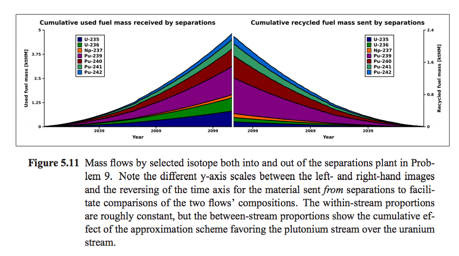

Use Cases for Cyclus Data Analysis¶
This section will attempt to document a number of primary data exploration use cases. For an overview of the information recorded in a Cyclus simulation database, check out Understanding the Database. The two most common modes are explorations of the material flows and the facility histories.
Material flow explorations¶
Many material flow explorations would begin by visualizing the time-dependent material flow between a set of sending facilities and a set of receiving facilities. The minimum information needed to generate such a visualization is the population of the two sets of facilities, and detailed discussion on how to populate these sets is given below. Once these sets are defined, the material flow information can be summed over all the possible transaction pathways at each time step to generate a single time series of data. The following discussion will identify ways to restrict/limit the quantity of data represented in such a time series visualization based primarily on filtering operations for different dimensions of the material flow data.
It is important to note that single visualizations may contain multiple time series of data, with a variety of alternative representations depending on the user’s interests. The following discussion will consider, in this order:
the resolution of the time domain,
filtering operations to restrict the data included in a single time series,
application of post-processing functions for alternative engineering responses, and
comparative visualization of multiple time series.
Time Domain Resolution and Representation¶
Most simulations are expected to proceed with monthly time steps (this is user-configurable), probably too fine for meaningful visualization. The default resolution for such a visualization should be annual flows of material, requiring a summation operation across non-overlapping regions of the time domain. It is likely that a user may want to interactively change the time domain resolution, possibly interested in the aggregated solution over time frames that are even coarser than annual.
It is also likely that users may want to switch between visualizations of the instantaneous material flow rate within a given step of the time resolution, and a cumulative material flow, integrating from the beginning of the simulation to the current step of the time resolution.
In a related and common time series interaction, users may want to zoom in and out of regions of the time domain to explore detailed features.
Filtering the Sets of Participating Facilities¶
Filtering operations will be always be necessary to define the set of facilities that participate in a given material flow visualization. The simplest form of such a filter is the selection of an entire market, thereby selecting all the facilities that participate in that market. Beyond that, some other obvious ways to create sets of facilities for either the source or receiving set are:
choosing individual facilities from a list of existing facilities
choosing individual institutions and therefore including all facilities owned by that institution
choosing individual regions and therefore including all facilities operating in that region
choosing a particular facility prototype and therefore including all facilities based on that prototype
choosing a particular facility module and therefore including all facilities based on that module
The ideal user interface will allow subsets of facilities to be added and deleted from the ultimate set of facilities using the notions of intersection, union, and negation.
The ideal user interface will also allow a single time series to be separated into multiple time series (possibly displayed in a comparative fashion), by selecting a characteristic that defines subsets of facilities.
Filtering the Set of Nuclides¶
It will also be important to restrict the material flow time series data by filtering on the set of nuclides that are included in the material flow data. There are a small number of standard ways to define sets of nuclides:
include all nuclides
choose individual chemical elements (e.g. uranium) and thereby including all the nuclides of that element
choose individual nuclides (e.g. U-235)
choose from predefined meaningful sets of nuclides (e.g. fission products, actinides, transuranics, fissile nuclides)
As with the facility filtering capability, an ideal user interface will allow subsets of nuclides to be added and deleted from the data set using the notions of intersection, union, and negation.
One example of a graph that shows the cumulative makeup of material in a facility with respect to nuclide can be found in figure 5.11 of Kyle Oliver’s masters thesis, GeniusV2: Software Design and Mathematical Formulations For Multi-Region Discrete Nuclear Fuel Cycle Simulation And Analysis.
{kind=link}
Post-processing for Alternative Engineering Responses¶
While the fundamental material flows are defined as the raw quantity of each nuclide that is being transacted, there will be a growing set of transformations that convert these number densities into other interesting metrics/quantities including:
radiotoxicity
decay heat
waste volume
others to-be-determined
Users will want to apply these transformations, either changing the metric shown in the primary visualization or cloning the primary visualization but showing the other metric.
Workflows for Comparitive Time Series Exploration¶
Once a number of single time series are defined, it will be common to visualize them on adjacent axes or within the same set of axes. One possible workflow is as follows:
A user selects a market and is immediately shown the instantaneous material flow through that market over the entire simulation time domain, with a default time resolution.
A user selects the originating region as a characteristic that splits the single material flow time series into multiple time series, each one now defined with a set of source facilities from a different region. These time series are shown on the same axes as a stacked area chart. The envelope of these now differentiated time series is identical to the envelope of the original time series.
The user is then interested in a certain subset of the nuclides, say the fissile nuclides, and requests that this same material flow data be filtered to only include those nuclides. Each of the material flow time series may (or may not) be reduced as the set of nuclides it includes is altered. (Note that while it is theoretically possible to differentiate by nuclide, it may become difficult to visualize the many different time series formed by differentiating by facility characteristic and nuclide at the same time. In some cases, especially where a small number of nuclide subsets are identified, this may be practical.)
At this point the user may seek a detailed isotopic breakdown of one of the material flows, either as a time series shown on a different axis pair, or as a single time step snapshot. In the latter case, a variety of options are available to visualize this, including bar charts, pie charts, tables of data, and other more advanced representations. When examining a snapshot, the linked visualization tool may update constantly as a user swipes a bar across the time series visualization.
At this point, an ideal user interface may allow users to “tear-off” individual time series from the collection of time series into different axes for further exploration/differentiation in modes similar to above.
(Quasi-)Spatial Representation of Material Flows¶
Another interesting visualization of this time series data is as an animated graph representation. Graph nodes would represent source and receiving facilities with the connecting arcs somehow indicating the magnitude of material flow (e.g. line thickness). The time domain would be represented by animation.
In some cases, the graphs of two different markets may be shown together, indicating the connectedness of these graphs through facilities that participate in both. Different commodities could be represented by different colors, for example.
Such a representation could also be coordinated with the more traditional time series visualization, in which the graph serves as a way to select which facilities will be included in the sets for defining the material flow time series, either by selecting specific nodes or by selecting specific arcs.
At such a time that geospatial data (or an approximation/surrogate to this data) is available, this graph visualization could be arranged to represent the real geospatial locations of facilities.
Commodity Capacity and Supply/Demand Exploration¶
Another primary visualization is time series data for installed capacity of a set of facilities. Most of the operations discussed above will be of interest including:
time domain resolution and representation
filtering across different dimensions (although not across a nuclide dimension)
applying transformations
comparative visualization
By combining the information about the theoretical capacity with the information about material transactions, the relationship between supply and demand can be explored. (Note that the standardization of input and output resource buffers within facilities means that instantaneous transaction flow rates are not always representative of instantaneous utilization of the available processing capacity. Access to this information will require additional output records.)